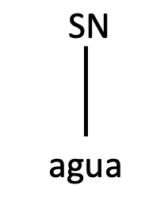
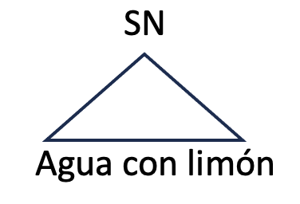
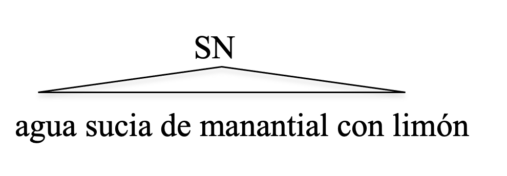
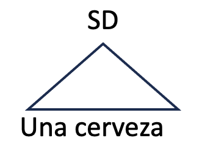

Handout 5: Introducción a los sintagmas
Las oraciones tienen una estructura interna
Pregunta: ¿Son las oraciones una simple secuencia lineal de palabras?
Respuesta: No.
- Hay varios motivos para concluir que la oración, en términos generales, tiene una estructura interna – las partes de la oración se combinan de una forma que resulta en una organización interna.
Primero: Hay una intuición de que algunas palabras se agrupan de forma más natural que otras.
- Utilizando los corchetes (“square brackets”), indica las secuencias de palabras que parecen formar un grupo, en la oración en (1).
- El chico alto come arroz blanco en un restaurante chino.
Segundo: Las operaciones y las reglas sintácticas no parecen depender del orden lineal de las palabras, sino de la estructura interna de la oración.
- El piloto sabía que los frenos fallaban.
- ¿Sabía el piloto que los frenos fallaban?
Una regla lineal posible: Se mueve el primer verbo a la izquierda.
- El piloto que ganó la carrera sabía que los frenos fallaban.
- ¿Sabía el piloto que ganó la carrera que los frenos fallaban?
- *¿Ganó el piloto que la carrera sabía que los frenos fallaban?
- Estos ejemplos muestran que la regla está basada en nociones como verbo principal vs. verbo subordinada y en nociones como el sujeto.
Tercero: Las oraciones ambiguas, que tienen dos interpretaciones ¿Cómo se explican las dos interpretaciones con las misma secuencia de palabras?
- Pedro habló a los estudiantes de lingüística.
La conclusión: La oración tiene una estructura interna.
Nuestra meta: Determinar la estructura interna de la oración.
Lo que veremos: Las categorías sintácticas forman grupos de palabras más grandes – los sintagmas
Los sintagmas
- Cada categoría sintáctica se puede expandir en frase (“phrases”) más grandes. Los N en SN (sintagma nominal), los V en SV (sintagma verbales) etc.
El sintagma Nominal (SN)
Considera los objetos directos (en corchetes) en las oraciones de (5):
- Jorge bebe [SN agua ]
- Jorge bebe [SN agua con limón]
- Jorge bebe [SN agua sucia]
- Jorge bebe [SN agua sucia de manantial con limón]
Pregunta: ¿Hay algunas evidencias de que se porta como una unidad en la sintaxis?
Respuesta: Sí. Se mueve como unidad por ejemplo. Es decir, puede aparecer en posiciones distintas.
- Bebe agua.
- Agua, bebe.
- Bebe agua con limón.
- Agua con limón, bebe.
- Agua sucia, bebe.
- Agua de manantial, bebe.
- Agua sucia de manantial con limón, bebe.
- Parece que estas secuencias de palabras forman un unidad en la oración. Lo podemos representar del siguiente modo.
- 
- 
- 
Los triángulos indican que hay más estructura interna, pero no lo estamos representando (de momento).
El nodo SN es la etiqueta de la unidad sintáctica: la secuencia agua con limón es un sintagma nominal (SN).
El Sintagma Determinante (SD)
- Considera los objetos directos de las oraciones en (10)
- Juan se bebió [una cerveza].
- Juan se bebió [dos cervezas].
- Juan se bebió [mucha cerveza].
- Juan se bebió [mi cerveza].
- Juan se bebió [la cerveza].
Dos preguntas:
¿De qué categoría sintáctica es cerveza?
¿De qué categoría sintáctica son una, dos, mucha, mi, la?
- Las oraciones en (11) indican que el determinante (D) y el sustantivo (N) forman unidad sintáctica, ya que se mueven juntos.
- Se bebió una cerveza.
- Una cerveza, se bebió.
- Se bebió mi cerveza.
- Mi cerveza, se bebió.
- Se bebió dos cervezas.
- Dos cervezas, se bebió.
- Por lo tanto, representamos una cerveza como en (12).
- 
Es decir, el D con un N forman una unidad sintáctica que es el sintagma determinante (SD).
Una implicación: El SN está dentro del SD. En el siguiente handout, veremos evidencias de que es así.